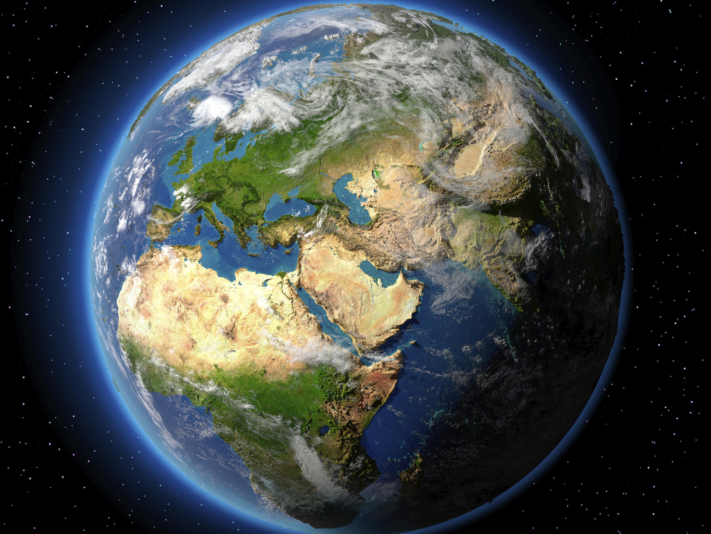

Planeta Zemlja
Zemlja je treća planeta po udaljenosti od Sunca i jedina poznata planeta u svemiru na kojoj postoji život.
Prema radiometrijskom računanju i drugim izvorima dokaza, Zemlja se formirala pre više od 4,5 milijardi godina, što je utvrđeno određivanjem vremena poluraspada urana i torijuma.Gravitacija Zemlje međusobno deluje sa drugim objektima u svemiru, posebno sa Suncem i Mesecom, jedinim prirodnim satelitom Zemlje, koji je počeo da kruži oko Zemlje pre 4,53 milijardi godina. Gravitaciono delovanje između Zemlje i Meseca uzrokuje okeanske plime i oseke, stabilizuje orijentaciju Zemlje oko svoje ose i postepeno usporava istu.

Površinu Zemlje čine voda i kopno. Okeani i mora čine veliki deo naše planete - oko 71 odsto, dok je preostalih 29 odsto pod kopnom.
Najveće vodene celine su okeani:
- Tihi okean (znamo ga i pod imenom Pacifik ili Veliki okean),
- Atlantski okean,
- Indijski okean,
- Južni okean,
- Severni ledeni okean.
Krajnja severna i krajnja južna tačka na Zemlji zovu se Severni i Južni pol. To su mesta na kojima zamišljena Zemljina osa prolazi kroz površinu Zemlje. Zamišljena linija kružnica tačno između Severnog i Južnog pola zove se ekvator. Tu je Zemlja malo ispupčena dok je na polovima blago spljoštena.
Spljoštenost Zemlje je mala, tako da je (iako je zapravo geoid) često prikazujemo i opisujemo kao loptu.
Globus
Globus je model Zemlje koji je umanjen i loptastog oblika, postoji u različitim veličinama.
Globus je proporcionalno umanjen, a posmatranjem globusa može da se nauči dosta toga o Zemlji. Na njemu mogu biti ucrtane razne stvari, ali uglavnom svi imaju mora, okeane i kontinente.
Pored geografskih postoje i globusi kojima se prikazuju zvezde i druga nebeska tela, njih nazivamo astronomskim globusima. Savremene tehnologije omogućila su postojanje indukcionog globusa, po kome se može crtati i pisati.